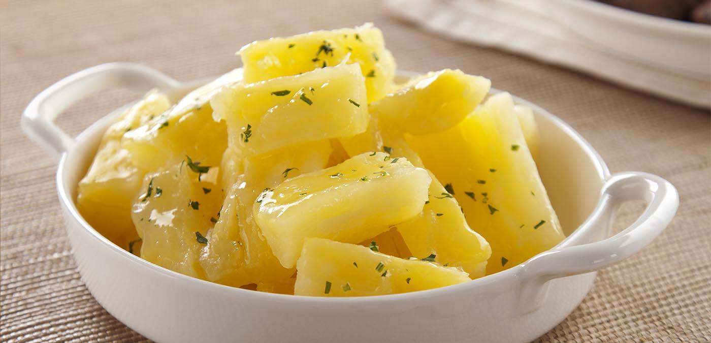

Macaxeira
Macaxeira is very tasty and flexible dish that can be served alongside many different side dishes and accommodates a lot of different tastes.
Here are the ingredients and how to prepare it:
ingredients
- 3 tea-cups of water
- 500g of peeled macaxeira, cut in big cubes
- 2 spoons of butter
- 1 spoon of salt
Steps
- In a medium pan, put all the ingredients together
- let it cook for 15 minutes, medium heat, until the macaxeira gets softer
- cover the whole pan with the flour until you make a thin layer
- take it out of heat of mix with your side dish
- We're all set! Good job.